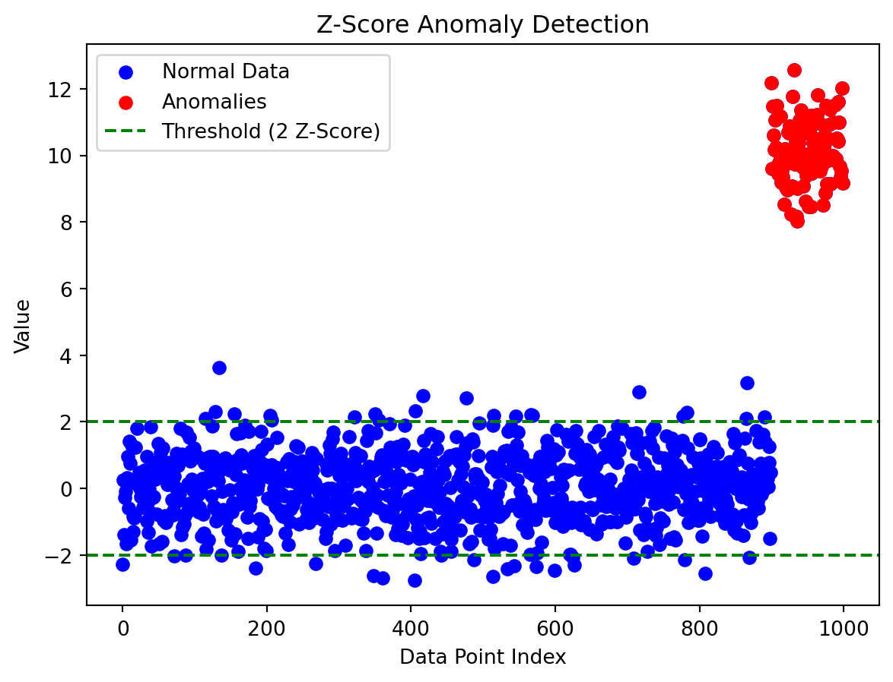
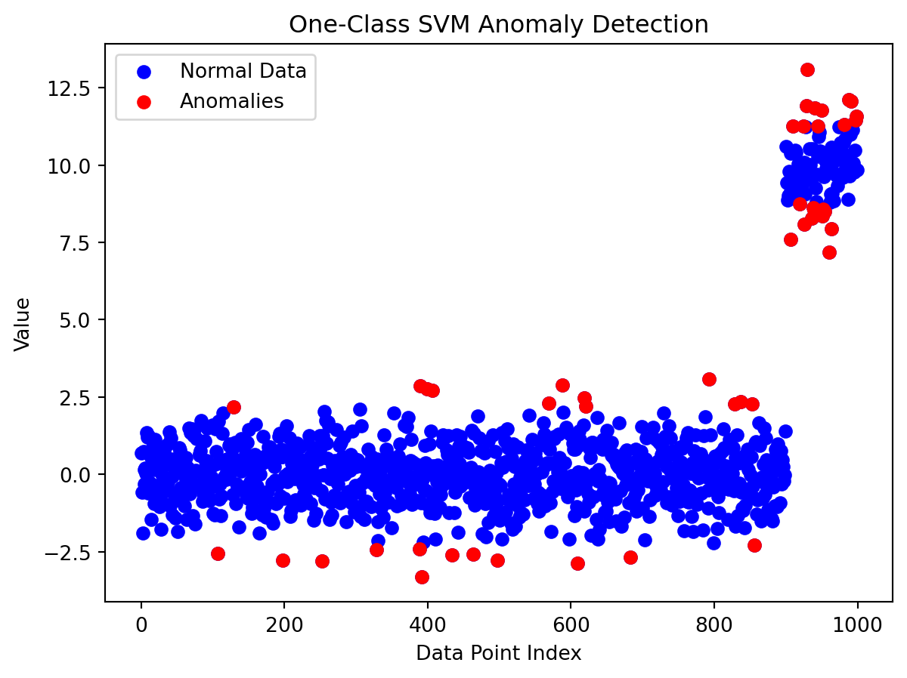
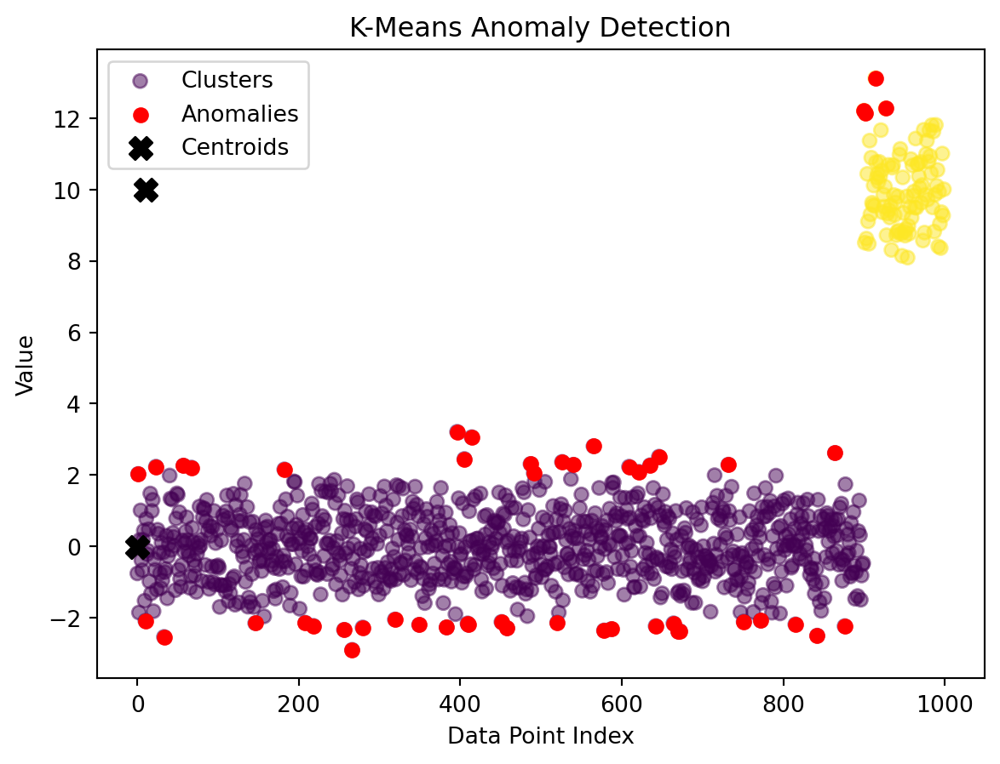

In the dynamic realm of machine learning, anomaly detection emerges as a crucial technique, enabling the identification of irregularities and outliers within datasets. From fraud detection in financial transactions to identifying defects in manufacturing, anomaly detection plays a pivotal role in maintaining the integrity and reliability of systems. In this blog, we’ll unravel the complexities of anomaly detection, exploring its principles, methods, and real-world applications.
Understanding Anomaly Detection:
Anomaly detection, also known as outlier detection, is a branch of machine learning focused on identifying instances that deviate significantly from the norm within a dataset. Unlike traditional classification, anomaly detection is often performed on unlabeled data, where the algorithm learns to recognize patterns of normal behavior and flag instances that exhibit unusual characteristics.
Key Concepts:
Normal Behavior Modeling:
Anomaly detection models establish a baseline of normal behavior within the data. Instances deviating from this baseline are flagged as anomalies.
Supervised vs. Unsupervised:
While anomaly detection is typically unsupervised, where the algorithm learns from unlabeled data, some methods may incorporate a small amount of labeled data for training.
Anomaly Detection Techniques:
1. Statistical Methods:
Statistical techniques, such as Z-score, use measures of central tendency and dispersion to identify data points that fall outside a predefined range.
Let’s use Z-score for an example:
Z-Score, also known as standard score, is a statistical metric used for quantifying how far a data point is from the mean of a dataset in terms of standard deviations. In anomaly detection, Z-Score provides a measure of how unusual or unexpected a particular observation is within a given distribution.
import numpy as npimport matplotlib.pyplot as pltfrom scipy.stats import zscore# Generate synthetic data with anomaliesdata = np.concatenate([np.random.normal(0, 1, 900), np.random.normal(10, 1, 100)])# Calculate Z-Scores for the dataz_scores = zscore(data)# Set a threshold for anomaly detection (e.g., 3 standard deviations)threshold =2# Identify anomalies based on the thresholdanomalies = np.where(np.abs(z_scores) > threshold)[0]# Visualize the data and anomaliesplt.scatter(range(len(data)), data, c='blue', label='Normal Data')plt.scatter(anomalies, data[anomalies], c='red', label='Anomalies')plt.axhline(threshold, color='green', linestyle='--', label=f'Threshold ({threshold} Z-Score)')plt.axhline(-threshold, color='green', linestyle='--')plt.title('Z-Score Anomaly Detection')plt.xlabel('Data Point Index')plt.ylabel('Value')plt.legend()plt.show()

2. Machine Learning Algorithms:
Various machine learning algorithms, including Isolation Forests and One-Class SVM, are trained on normal data and can identify instances that deviate significantly from the learned patterns.
Let’s use One-Class SVM for an example:
One-Class SVM (Support Vector Machine) is a powerful algorithm for anomaly detection that builds a model representing normal behavior and identifies deviations from this norm as anomalies.
# Import necessary librariesimport numpy as npimport matplotlib.pyplot as pltfrom sklearn.svm import OneClassSVM# Generate synthetic data with anomaliesdata = np.concatenate([np.random.normal(0, 1, 900), np.random.normal(10, 1, 100)])# Reshape the data for compatibility with OneClassSVMdata = data.reshape(-1, 1)# Fit One-Class SVM modelsvm_model = OneClassSVM(nu=0.05) # Adjust nu based on the dataset characteristicssvm_model.fit(data)# Predict inliers and outlierspredictions = svm_model.predict(data)# Identify anomalies (predictions == -1)anomalies = np.where(predictions ==-1)[0]# Visualize the data and anomaliesplt.scatter(range(len(data)), data, c='blue', label='Normal Data')plt.scatter(anomalies, data[anomalies], c='red', label='Anomalies')plt.title('One-Class SVM Anomaly Detection')plt.xlabel('Data Point Index')plt.ylabel('Value')plt.legend()plt.show()

3. Clustering-Based Approaches:
Clustering algorithms, when applied to normal data, can group similar instances. Anomalies are then identified as data points that do not belong to any cluster.
Let’s use One-Class SVM for an example:
K-Means, a popular clustering algorithm, can be repurposed for anomaly detection by leveraging the concept of cluster centroids. Anomalies are identified by comparing the distances to a chosen threshold (e.g., 95th percentile).
# Import necessary librariesimport numpy as npimport matplotlib.pyplot as pltfrom sklearn.cluster import KMeansfrom scipy.spatial.distance import cdist# Generate synthetic data with anomaliesdata = np.concatenate([np.random.normal(0, 1, 900), np.random.normal(10, 1, 100)])# Reshape the data for compatibility with KMeansdata = data.reshape(-1, 1)# Fit KMeans modelkmeans_model = KMeans(n_clusters=2, random_state=42) # Adjust the number of clusters based on the datasetkmeans_model.fit(data)# Predict cluster assignments and calculate distances to centroidscluster_assignments = kmeans_model.predict(data)distances = np.min(cdist(data, kmeans_model.cluster_centers_, 'euclidean'), axis=1)# Set a threshold for anomaly detectionthreshold = np.percentile(distances, 95) # Adjust the percentile based on desired sensitivity# Identify anomaliesanomalies = np.where(distances > threshold)[0]# Visualize the data, clusters, and anomaliesplt.scatter(range(len(data)), data, c=cluster_assignments, cmap='viridis', label='Clusters', alpha=0.5)plt.scatter(anomalies, data[anomalies], c='red', label='Anomalies')plt.scatter(kmeans_model.cluster_centers_[:, 0], kmeans_model.cluster_centers_, c='black', marker='X', s=100, label='Centroids')plt.title('K-Means Anomaly Detection')plt.xlabel('Data Point Index')plt.ylabel('Value')plt.legend()plt.show()
/Users/anant/anaconda3/lib/python3.11/site-packages/sklearn/cluster/_kmeans.py:1412: FutureWarning:
The default value of `n_init` will change from 10 to 'auto' in 1.4. Set the value of `n_init` explicitly to suppress the warning

Real-World Applications:
1. Fraud Detection:
Anomaly detection is extensively used in financial systems to identify unusual patterns or transactions that may indicate fraudulent activity.
2. Network Security:
Identifying unusual patterns in network traffic can help detect cybersecurity threats and potential breaches.
3. Manufacturing Quality Control:
Anomaly detection ensures the early identification of defects or irregularities in the manufacturing process, minimizing waste and ensuring product quality.
4. Healthcare Monitoring:
In healthcare, anomaly detection aids in monitoring patient data for unusual patterns that may signal health issues.
Evaluation Metrics:
True Positive (TP):
Instances correctly identified as anomalies.
False Positive (FP):
Normal instances incorrectly identified as anomalies.
True Negative (TN):
Normal instances correctly identified as normal.
False Negative (FN):
Anomalies incorrectly identified as normal instances.
Challenges and Considerations:
Labeling Anomalies:
The absence of labeled data for anomalies makes it challenging to evaluate and train models effectively.
Imbalanced Datasets:
Anomalies are often rare compared to normal instances, leading to imbalanced datasets. Specialized techniques are required to address this imbalance.
Conclusion:
As we delve into the intricacies of anomaly detection in machine learning, the significance of identifying irregularities within data becomes clear. From safeguarding financial systems against fraud to ensuring the quality of manufactured products, anomaly detection stands as a silent guardian, preserving the integrity and reliability of systems in our increasingly interconnected world. As technology continues to advance, the role of anomaly detection in maintaining the security and efficiency of diverse applications is set to become even more pronounced.
Source Code
---title: "A Beginner's Guide for Anomaly Detection"title-block-banner-color: whiteauthor: "Anant Sharma"date: "2023-11-30"categories: [news, code, analysis]image: "outlier2.jpeg"jupyter: python3---### Introduction:In the dynamic realm of machine learning, anomaly detection emerges as a crucial technique, enabling the identification of irregularities and outliers within datasets. From fraud detection in financial transactions to identifying defects in manufacturing, anomaly detection plays a pivotal role in maintaining the integrity and reliability of systems. In this blog, we'll unravel the complexities of anomaly detection, exploring its principles, methods, and real-world applications.### Understanding Anomaly Detection:Anomaly detection, also known as outlier detection, is a branch of machine learning focused on identifying instances that deviate significantly from the norm within a dataset. Unlike traditional classification, anomaly detection is often performed on unlabeled data, where the algorithm learns to recognize patterns of normal behavior and flag instances that exhibit unusual characteristics.#### Key Concepts:1. **Normal Behavior Modeling:** - Anomaly detection models establish a baseline of normal behavior within the data. Instances deviating from this baseline are flagged as anomalies.2. **Supervised vs. Unsupervised:** - While anomaly detection is typically unsupervised, where the algorithm learns from unlabeled data, some methods may incorporate a small amount of labeled data for training.### Anomaly Detection Techniques:#### 1. **Statistical Methods:** - Statistical techniques, such as Z-score, use measures of central tendency and dispersion to identify data points that fall outside a predefined range. Let's use Z-score for an example: Z-Score, also known as standard score, is a statistical metric used for quantifying how far a data point is from the mean of a dataset in terms of standard deviations. In anomaly detection, Z-Score provides a measure of how unusual or unexpected a particular observation is within a given distribution.```{python}import numpy as npimport matplotlib.pyplot as pltfrom scipy.stats import zscore# Generate synthetic data with anomaliesdata = np.concatenate([np.random.normal(0, 1, 900), np.random.normal(10, 1, 100)])# Calculate Z-Scores for the dataz_scores = zscore(data)# Set a threshold for anomaly detection (e.g., 3 standard deviations)threshold =2# Identify anomalies based on the thresholdanomalies = np.where(np.abs(z_scores) > threshold)[0]# Visualize the data and anomaliesplt.scatter(range(len(data)), data, c='blue', label='Normal Data')plt.scatter(anomalies, data[anomalies], c='red', label='Anomalies')plt.axhline(threshold, color='green', linestyle='--', label=f'Threshold ({threshold} Z-Score)')plt.axhline(-threshold, color='green', linestyle='--')plt.title('Z-Score Anomaly Detection')plt.xlabel('Data Point Index')plt.ylabel('Value')plt.legend()plt.show()```#### 2. **Machine Learning Algorithms:** - Various machine learning algorithms, including Isolation Forests and One-Class SVM, are trained on normal data and can identify instances that deviate significantly from the learned patterns. Let's use One-Class SVM for an example: One-Class SVM (Support Vector Machine) is a powerful algorithm for anomaly detection that builds a model representing normal behavior and identifies deviations from this norm as anomalies. ```{python}# Import necessary librariesimport numpy as npimport matplotlib.pyplot as pltfrom sklearn.svm import OneClassSVM# Generate synthetic data with anomaliesdata = np.concatenate([np.random.normal(0, 1, 900), np.random.normal(10, 1, 100)])# Reshape the data for compatibility with OneClassSVMdata = data.reshape(-1, 1)# Fit One-Class SVM modelsvm_model = OneClassSVM(nu=0.05) # Adjust nu based on the dataset characteristicssvm_model.fit(data)# Predict inliers and outlierspredictions = svm_model.predict(data)# Identify anomalies (predictions == -1)anomalies = np.where(predictions ==-1)[0]# Visualize the data and anomaliesplt.scatter(range(len(data)), data, c='blue', label='Normal Data')plt.scatter(anomalies, data[anomalies], c='red', label='Anomalies')plt.title('One-Class SVM Anomaly Detection')plt.xlabel('Data Point Index')plt.ylabel('Value')plt.legend()plt.show()```#### 3. **Clustering-Based Approaches:** - Clustering algorithms, when applied to normal data, can group similar instances. Anomalies are then identified as data points that do not belong to any cluster. Let's use One-Class SVM for an example: K-Means, a popular clustering algorithm, can be repurposed for anomaly detection by leveraging the concept of cluster centroids. Anomalies are identified by comparing the distances to a chosen threshold (e.g., 95th percentile).```{python}# Import necessary librariesimport numpy as npimport matplotlib.pyplot as pltfrom sklearn.cluster import KMeansfrom scipy.spatial.distance import cdist# Generate synthetic data with anomaliesdata = np.concatenate([np.random.normal(0, 1, 900), np.random.normal(10, 1, 100)])# Reshape the data for compatibility with KMeansdata = data.reshape(-1, 1)# Fit KMeans modelkmeans_model = KMeans(n_clusters=2, random_state=42) # Adjust the number of clusters based on the datasetkmeans_model.fit(data)# Predict cluster assignments and calculate distances to centroidscluster_assignments = kmeans_model.predict(data)distances = np.min(cdist(data, kmeans_model.cluster_centers_, 'euclidean'), axis=1)# Set a threshold for anomaly detectionthreshold = np.percentile(distances, 95) # Adjust the percentile based on desired sensitivity# Identify anomaliesanomalies = np.where(distances > threshold)[0]# Visualize the data, clusters, and anomaliesplt.scatter(range(len(data)), data, c=cluster_assignments, cmap='viridis', label='Clusters', alpha=0.5)plt.scatter(anomalies, data[anomalies], c='red', label='Anomalies')plt.scatter(kmeans_model.cluster_centers_[:, 0], kmeans_model.cluster_centers_, c='black', marker='X', s=100, label='Centroids')plt.title('K-Means Anomaly Detection')plt.xlabel('Data Point Index')plt.ylabel('Value')plt.legend()plt.show()```### Real-World Applications:#### 1. **Fraud Detection:** - Anomaly detection is extensively used in financial systems to identify unusual patterns or transactions that may indicate fraudulent activity.#### 2. **Network Security:** - Identifying unusual patterns in network traffic can help detect cybersecurity threats and potential breaches.#### 3. **Manufacturing Quality Control:** - Anomaly detection ensures the early identification of defects or irregularities in the manufacturing process, minimizing waste and ensuring product quality.#### 4. **Healthcare Monitoring:** - In healthcare, anomaly detection aids in monitoring patient data for unusual patterns that may signal health issues.### Evaluation Metrics:1. **True Positive (TP):** - Instances correctly identified as anomalies.2. **False Positive (FP):** - Normal instances incorrectly identified as anomalies.3. **True Negative (TN):** - Normal instances correctly identified as normal.4. **False Negative (FN):** - Anomalies incorrectly identified as normal instances.### Challenges and Considerations:1. **Labeling Anomalies:** - The absence of labeled data for anomalies makes it challenging to evaluate and train models effectively.2. **Imbalanced Datasets:** - Anomalies are often rare compared to normal instances, leading to imbalanced datasets. Specialized techniques are required to address this imbalance.### Conclusion:As we delve into the intricacies of anomaly detection in machine learning, the significance of identifying irregularities within data becomes clear. From safeguarding financial systems against fraud to ensuring the quality of manufactured products, anomaly detection stands as a silent guardian, preserving the integrity and reliability of systems in our increasingly interconnected world. As technology continues to advance, the role of anomaly detection in maintaining the security and efficiency of diverse applications is set to become even more pronounced.